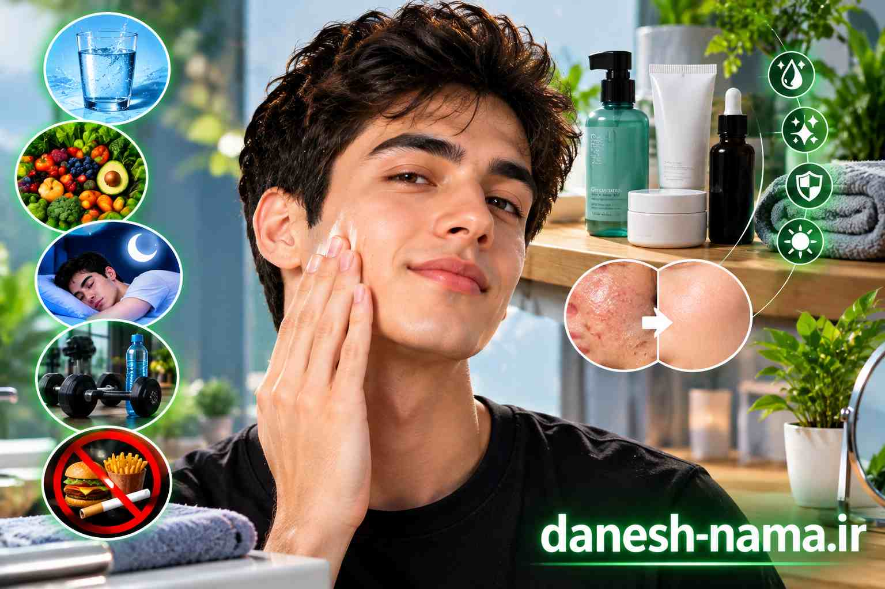

چطور پوست سالمی داشته باشم؟ ۱۵ روش علمی
پوست، بزرگترین عضو بدن ماست و نقش مهمی در سلامت و زیبایی داره. «چطور پوست سالمی داشته باشم؟» سوالیه که خیلی از ما از خودمون میپرسیم. در این مقاله از دانشنما، ۱۵ روش علمی و مؤثر برای داشتن پوستی سالم و شفاف رو بهت معرفی میکنیم.
پوست سالم یعنی چی؟
پوست سالم، پوستیه که:
- یکنواخت و شفاف باشه
- آب کافی داشته باشه
- بدون جوش و لک باشه
- خاصیت ارتجاعی داشته باشه
- در برابر عوامل خارجی مقاوم باشه
۱. ضدآفتاب بزن
مهمترین کار برای پوست سالم، استفاده از ضدآفتاب است. اشعه UV خورشید، عامل اصلی پیری زودرس، لک و حتی سرطان پوست است.
نکات مهم:
- ضدآفتاب با SPF حداقل ۳۰
- هر روز، حتی ابری
- هر ۲ ساعت تجدید کن
۲. روزانه پوستت رو بشور
شستن صورت، آلودگی، چربی و سلولهای مرده رو پاک میکنه.
چیکار کنی: صبح و شب با شوینده ملایم صورتت رو بشور.
۳. مرطوبکننده بزن
مرطوبکننده، آب پوست رو حفظ میکنه و از خشکی جلوگیری میکنه.
چیکار کنی: بعد از شستن صورت، مرطوبکننده مناسب پوستت بزن.
۴. آب کافی بنوش
آب، برای سلامت پوست ضروریه. کمآبی، پوست رو خشک و بیروح میکنه.
هدف: ۸ تا ۱۰ لیوان آب در روز.
۵. تغذیه سالم داشته باش
غذاهایی که برای پوست مفیدن:
- میوهها و سبزیجات: سرشار از آنتیاکسیدان
- ماهی چرب: امگا-۳
- مغزها: ویتامین E
- آووکادو: چربیهای سالم
- چای سبز: آنتیاکسیدان
و از اینا پرهیز کن:
- قند و شیرینی
- غذاهای فرآوریشده
- الکل
۶. خواب کافی
خواب، زمان ترمیم پوست است. کمخوابی باعث تیرگی زیر چشم و پیری زودرس میشه.
هدف: ۷ تا ۹ ساعت خواب در شب.
۷. استرس رو مدیریت کن
استرس مزمن، هورمون کورتیزول رو افزایش میده که باعث جوش و مشکلات پوستی میشه.
۸. ورزش کن
ورزش، جریان خون رو افزایش میده و به تغذیه پوست کمک میکنه.
۹. سیگار نکش
سیگار، کلاژن پوست رو از بین میبره و باعث پیری زودرس و چین و چروک میشه.
۱۰. از لایهبرداری استفاده کن
لایهبرداری (Exfoliation) سلولهای مرده رو پاک میکنه و پوست رو شفافتر میکنه.
نکته: هفتهای ۱ تا ۲ بار کافیه. زیادهروی، پوست رو آسیب میزنه.
۱۱. سرم مناسب استفاده کن
سرمها، ترکیبات مؤثری دارن که به مشکلات خاص پوستی کمک میکنن:
- ویتامین C: برای روشنکنندگی و لک
- هیالورونیک اسید: برای آبرسانی
- رتینول: برای ضدپیری
- نیاسینامید: برای تنظیم چربی
۱۲. ماسک صورت بزن
ماسکهای طبیعی مثل عسل، آووکادو، خیار و ماست، برای پوست مفیدن.
نکته: هفتهای ۱ تا ۲ بار کافیه.
۱۳. از محصولات مناسب پوستت استفاده کن
هر پوستی نیازهای خاص خودش رو داره:
- پوست چرب: محصولات بدون چربی (Oil-free)
- پوست خشک: محصولات مرطوبکننده قوی
- پوست حساس: محصولات بدون عطر و ملایم
- پوست مختلط: محصولات متعادل
۱۴. از دست زدن به صورت پرهیز کن
دستها، منبع اصلی باکتری هستن. دست زدن به صورت، باعث پخش شدن باکتری و جوش میشه.
۱۵. به متخصص پوست مراجعه کن
اگه مشکلات پوستی جدی داری (مثل آکنه شدید، لک، اگزما)، حتماً به متخصص پوست مراجعه کن.
روتین پوستی روزانه
| مرحله | صبح | شب |
|---|---|---|
| ۱ | شوینده ملایم | شوینده ملایم |
| ۲ | تونر (اختیاری) | تونر (اختیاری) |
| ۳ | سرم (اختیاری) | سرم (اختیاری) |
| ۴ | مرطوبکننده | مرطوبکننده |
| ۵ | ضدآفتاب | - |
اشتباهات رایج
- استفاده از محصولات زیاد: پوست رو تحریک میکنه.
- تغییر مداوم محصولات: پوست فرصت سازگاری پیدا نمیکنه.
- نادیده گرفتن ضدآفتاب: بزرگترین اشتباه.
- شستن صورت با آب داغ: پوست رو خشک میکنه.
- کندن جوشها: باعث جای زخم میشه.
پرسشهای متداول
روتین پوستی روزانه باید شامل چه چیزهایی باشد؟
یک روتین پوستی ساده شامل شوینده ملایم، مرطوبکننده و ضدآفتاب است. برای پوستهای خاص، سرم و لایهبرداری هم اضافه میشود.
آیا گرانترین محصولات پوستی بهترین هستند؟
خیر. محصولات پوستی گرانقیمت لزوماً بهتر نیستند. مهمترین چیز، تناسب محصول با نوع پوست و ترکیبات مؤثر آن است.
چطور بفهمم نوع پوستم چیه؟
پوست چرب: براق و چرب. پوست خشک: کشیده و پوستهپوسته. پوست مختلط: ترکیبی از هر دو. پوست حساس: قرمز و تحریکپذیر.
آیا مصرف آب زیاد به پوست کمک میکند؟
بله، آب کافی به آبرسانی پوست کمک میکند، اما بهتنهایی معجزه نمیکند.
منابع
جمعبندی
داشتن پوست سالم، با رعایت چند اصل ساده امکانپذیره: ضدآفتاب، شستشو، مرطوبکننده، تغذیه سالم، خواب کافی و مدیریت استرس. به یاد داشته باش که ثبات و استمرار مهمتر از استفاده از محصولات گرانقیمته. با رعایت این نکات، میتونی پوستی سالم و شفاف داشته باشی.
اگر به مباحث علمی و سلامت علاقه دارید، پیشنهاد میکنیم این مقالات دانشنما را هم مطالعه کنید:
← بازگشت به صفحه اصلی
دیدگاهها